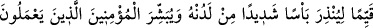
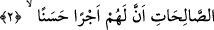
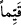
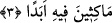
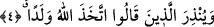

2. Onu dosdoğru (bir Kitab) olarak indirdi ki katından gelecek şiddetli azâba
karşı (insanları) uyarsın ve yararlı işler yapan mü’minlere kendileri için güzel
mükâfat bulunduğunu müjdelesin.
“Onu dosdoğru” yâni, istikâmet üzere, mûtedil, ifrat ve tefritten uzak ya da kulların
dinî ve dünyevî işlerini düzelten, doğrultan “(bir Kitab) olarak indirdi ki” “
Kayyimen” kelimesi, ‘düzelten, doğrultan’ anlamında alındığında bu, Kitabın kendisinin
kemâl ile vasfedildikten sonra başkalarını kemâle erdirme (tekmîl) ile vasfedilmesi
olur.
Kâşifî der ki: “Te’vîlât’ta şöyle denilmiştir: (Birinci âyetteki) “ona” zamîri “kulu”
kelimesine râcidir, onunla ilgilidir. Mânâsı şöyle olur: O, kendi kuluna kendisinden
başkasına meyil vermedi. Onu bütün hâllerinde istikâmet üzere kıldı.”
Muhammed (a.s.) ya da o Kitab içindekilerle inkâr edenleri Allah “katından gelecek
şiddetli azâba karşı uyarsın” yâni onların inkâr ve yalanlamalarına karşılık O’nun
katından gelecek azâbı bildirmek için indirildi. Bu azâb, ya dünyada onların kökünü
kurutacak bir azâbdır veya ahirette atılacakları cehennem ateşidir ya da bunların her
ikisidir. Âyette inkâr edenlere ineceği bildirilen azâbın Allah’ın: ‘katından’ olacağı
belirtilmiştir. Çünkü gerçek anlamda azâb edici O’dur, başkası değil.
“Ve yararlı işler” sırf Allah rızası için sâlih ameller/iyi işler “yapan mü’minlere”
tasdik edip doğrulayan kimselere “kendileri için” bu îmanlarına ve hayırlı amellerine
karşılık “güzel mükâfât” cennet ve oradaki eşsiz nimetler “bulunduğunu müjdelesin.”
3. Onlar orada ebedî kalacaklardır.
“Onlar orada” o ecrin içinde “ebedî” kesilme, sona erme ya da durumunda değişme
olmadan “kalacaklardır.”
Önceki âyette önce uyarının (inzâr), sonra müjdenin (tebşîr) zikredilmesi; ”hi” ile
yazılan ve boşaltıp temizlemek anlamına gelen tahliyenin, ”ha” ile yazılan ve süsleyip
bezemek mânâsına olan tahliyeden önce gelmesinden dolayıdır.
4. Ve “Allah evlât edindi” diyenleri de uyarmak için.